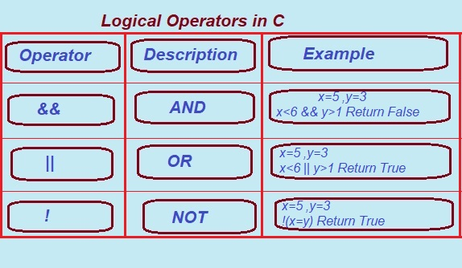

2. || (Logical OR) :
The condition becomes true if any one of them is non-zero(true or 1). Otherwise, it returns false i.e, 0 as the value. Below is the truth table for the logical OR operator.
This type of operator returns true even when both or even one of the conditions that are under consideration are satisfied. In any other case, it is bound to return false. For instance, the p || q will return true when both or one of p and q are true (non-zero). It also returns to be true when p and q are true.
Syntax: (condition_1 || condition_2)
e.g. If c = 5 and d = 2 then, expression ((c==5) || (d>5)) equals to 1.
Mastering Logical Operators in C Programming: AND, OR, NOT, and XOR Explained
Logical operators will be discussed in this article along with the various types that can be used in C programming. By reading through this article, you will be able to learn all about the logical operators that C has.
An operator is a symbol that is used in programming to perform certain operations.
There are different types of operators in C programming like arithmetic operators, relational operators, logical operators, assignment operators, increment and decrement operators, etc. We will be focusing on logical operators in this article.
In a nutshell, logical operators in C are special utilities that combine two or more conditions. The logical operators check whether the conditions are true or false and return a Boolean value (either true or false). They help the program to take decisions based on one or more conditions. The value returned by the logical operator will be either 0 (false) or 1 (true), depending on whether the condition tested is true or not.
So the logical operators used in C are:
1. && Logical AND Operator.
2. || Logical OR Operator.
3. ! Logical NOT Operator.
4. ^ Logical XOR Operator.
Let us learn The Logical Operators:
The Logical Operators are special Type of word or symbol used in C Programming to connect two or more expression such that the value of expression produced depends only on that of original expression.
The Result of the Logical Comparision either true(1) or false(0), can be used to make decisions Regarding Program flow.
Let discuss them one by one.
1. && (Logical AND):
The value of an AND expression is 1 only if both input values are 1. Otherwise, the value is 0. That is, the above expression equals 1 if and only if A and B are 1. The AND operator
If both operands are non-zero, then the condition becomes true. Otherwise, the result has a value of 0. The return type of the result is int. Below is the truth table for the logical AND operator.
This type of operator returns true when both the conditions that are under consideration happen to be satisfied. In any other case, it is bound to return false. For instance, the p && q will return true when both- p and q are true (non-zero).
Syntax: (condition_1 && condition_2)
e.g If c = 5 and d = 2 then, expression ((c==5) && (d>5)) equals to 0.
3. ! (logical NOT):
If the condition is true then the logical NOT operator will make it false and vice-versa. Below is the truth table for the logical NOT operator.
This type of operator returns true whenever the conditions that are under condition are not at all satisfied. In any other case, it is bound to return false. For instance, the !b will return true if b is false, meaning, when b = 0.
Syntax: !(condition_1 && condition_2)
e.g. If c = 5 then, expression !(c==5) equals to 0.
4. Logical XOR(^):
If both bits are the same then it will return false otherwise true. Below is the truth table for the logical XOR operator.
Syntax:- ((condition1) ^ (condition2))
e.g. If c = 5 and d = 2 then, expression ((c==5) ^ (d<5)) equals to 0.

Logical Operator Truth Table
| p | q | p&&q | p||q | !p | p^q |
|---|---|---|---|---|---|
| 0 | 0 | 0 | 0 | 1 | 0 |
| 0 | 1 | 0 | 1 | 1 | 1 |
| 1 | 0 | 0 | 1 | 0 | 1 |
| 1 | 1 | 1 | 1 | 0 | 0 |
C Program to demonstrate Working of Logical Operator.
// C program that shows how logical operators works.
#include <stdio.h>
int main()
{
int p = 5, q = 5, r = 10, res;
res = (p == q) && (r > q);
printf("(p== q) && (r > q) is %d \n", res);
res = (p == q) && (r < q);
printf("(p == q) && (r < q) is %d \n", res);
res = (p == q) || (r < q);
printf("(p == q) || (r < q) is %d \n", res);
res = (p != q) || (r < q);
printf("(p != q) || (r < q) is %d \n", res);
res = !(p != q);
printf("!(p != q) is %d \n", res);
res = !(p == q);
printf("!(p == q) is %d \n", res);
return 0;
}
Output:
(p == q) && (r > q) is 1
(p == q) && (r < q) is 0
(p == q) || (r < q) is 1
(p != q) || (r < q) is 0
!(p != q) is 1
!(p == q) is 0
Program Explanation:
Execution of the Program:
1. Declaration of variables:
o int p = 5, q = 5, r = 10, res;
o We have declared three integer variables p, q, and r, initializing them with 5, 5 and 10 respectively. The variable res would hold the outcome of logical operations.
2. First Logical Operation: AND (&&)
res = (p == q) && (r > q);
o Condition: (p == q) checks whether p is equal to q which is true since both are 5.
o (r > q) checks whether r is greater than q (this is true since 10 > 5).
o AND Operation: true&&true yields 1 (true).
o Output: (p == q) && (r > q) is 1
3. Second Logical Operation: AND (&&)
res = (p == q) && (r < q);
o Condition: (p == q) is true (p and q are both 5)
.
o (r < q) checks whether r is less than q (this is false, for 10 is not less than 5).
o AND Operation: true&&false gives 0 (false).
o Output: (p == q) && (r < q) is 0
4. Third Logical Operation: OR (||)
res = (p == q) || (r < q);
o Condition: (p == q) is true and (r < q) is false.
o OR Operation: true || false equals to 1 (true), for only one of the conditions needs to be true for OR to return true.
o Output: (p == q) || (r < q) is 1
5. Fourth Logical Operation: OR (||)
res = (p != q) || (r < q);
o Condition: (p != q) checks if p is not equal to q (false, since both are 5).
o (r < q) is false too (for 10 is not less than 5).
o OR Operation: false || false equals to 0 (false).
o Output: (p != q) || (r < q) is 0.
6. Fifth Logical Operation: NOT (!)
res = !(p != q);
o Condition: (p != q) checks whether p is not equal to q (false, since both are 5).
o NOT Operation: !false equals 1 (true), since the NOT operator inverts the value.
o Output: !(p != q) is 1.
7. Sixth Logical Operation: NOT (!)
res = !(p == q);
o Condition: (p == q) checks whether p is equal to q (true, since both are 5).
o NOT Operation: !true equals to 0 (false).
o Output: !(p == q) is 0.
Final Output:
(p == q) && (r > q) is 1
(p == q) && (r < q) is 0
(p == q) || (r < q) is 1
(p != q) || (r < q) is 0
!(p != q) is 1
!(p == q) is 0
Conclusion:
This program highlights the workings of logical operators such as AND (&&), OR (||) and NOT (!) in the evaluation of conditions in C. Depending upon the validity of the conditions, the results will decide how to make a choice in the program using logical operators combining the conditions.
Previous Topic:-->> Relational Operators || Next topic:-->>Bitwise perators